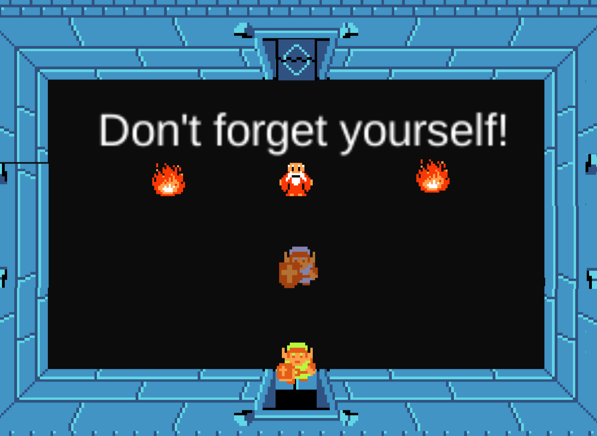

The Legend of Zelda: Mirror Link
About
The projet is created by Beining (beiningz@umich.edu ) and Xiaoyan Bai (smallyan@umich.edu ) It is about a Unity remaster of The Legend of Zelda(1986) and a custom level with a new collector Mirror Link that features new maps and new mechanics.
Contributions
Beining and I recreated the first level of the Legend of Zelda(1986) utilizing Unity and C# , and together the new custom level with a new tool 'Mirror Link'. I am responsible for implementing various components in the map and room transition systems in both level, building the audio system. I also worked on player's health and death, as well as the knock back system for player and enemies. Besides, I re-implemented the bow room and experimented on enemy movement.
Mirror Link
Player can control Mirror Link, whose right and left movements are opposite to Link, to get the keys and solve the puzzle by pushing blocks. Also Player need to manipulate the control to avoid bladetraps.